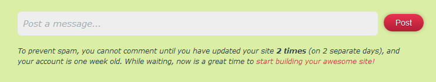

By default every website on Neocities should have a website profile page. You can access a profile URL by going to https://neocities.org/site/(your-url), all website profile pages are in lower-case.
A user has the option to opt-out of having a website profile page/being able to have other user's post on their profile page, by going to https://neocities.org/settings/(your-url) and selecting the opt-out option. If a user ops-out of having a profile page, then rather than seeing their userpage, a person will instead automatically be redirected to the person's website.
A website profile page should show a number of things, such as a screencap of the latest update, people who follow you, and comments the owner has posted and received. A website profile will also show how many views, followers, updates, and tips a site has, along with what tags the site uses.
Along with updates by the user, other members of Neocities can leave messages on update logs, along with just making a new post on a user's profile wall.
After a new member of Neocities joins, they will be unable to make any posts, and will not be able to reply to a post made by any other user. This was made to help fight spam on Neocities. Once a user is one week old and has made at least two updates (on two separate days) then they may interact with other users.
